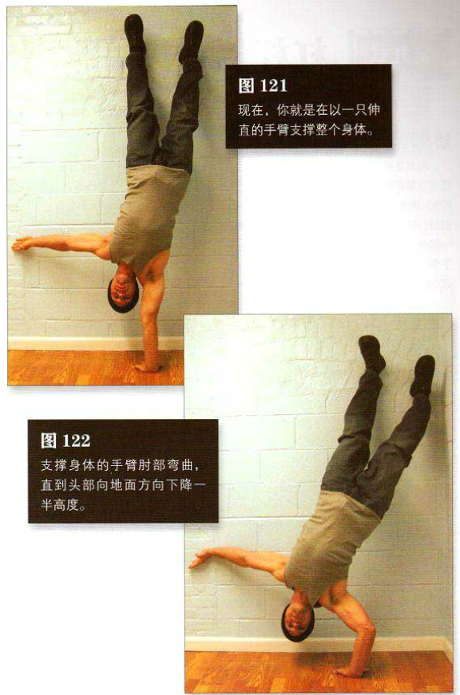

蹬起靠墙成倒立姿势，脚跟与墙壁接触，身体略微成弓形。双手与肩同宽，距离墙根约15 一 25 厘米，手臂伸直。逐渐抬起一只手的手掌，将重心慢慢转移到身体的另一侧，另一侧的手掌会承受越来越多的体重。继续这种转移过程（持续几秒钟），直到略微抬起的手掌上只剩下几千克的压力。现在轻轻抬起这只手，使之离开地面，并将它伸向远处以保持平衡。
现在，你就是在以一只伸直的手臂支撑整个身体。这是该动作的起始姿势（图 121）。支撑身体的手臂肘部弯曲，直到头部向地面方向下降一半高度。这是该动作的结束姿势（图 122）。暂停一下，然后推起身体。
初级标准：1 组，4 次
中级标准：2 组，各 6 次
高级标准：2 组，各 8 次